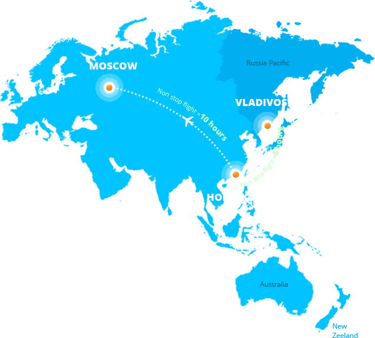

OPEN RUSSIA via
Russian Asian Pacific
Advertising Initiative

GENERAL IDEA
We focus at the point at which Russia Pacific and Vladivostok in particular is the best gateway for Asian and Pacific Rim brands penetration to the Russian market. We know Russian audience needs, attitudes and behavior like no others. We also know that the population of Russia Pacific and Siberia is much more adaptive for Asian brands than the population of European part of Russia. We’ll help your brands, goods and services find their consumers in Russia.
RUSAPAI gives Asian companies the opportunity to place test marketing campaigns in Russia Pacific in order to define how Russian users are going to interact with their brand.
DV Region, a well-known Russia Pacific and Siberia advertising agency, launched RUSAPAI in 2012
We have good reputation in the market and a work vast experience with regional suppliers of advertising services across Russia Pacific and Siberia. We also currently work with the world’s leading brands.

We love good ideas and ambitious clients. If you have an interesting project — big or small — we’d love to collaborate with you.
Contact UsTEAM
We were born and grew up in the Far East of Russia. We love Pacific Ocean. It is our source of energy and creativity.
18 YEARS
IN THE MARKET
We are sure that working with nice, fun and talented people always results in effective work. We believe in what we do and we want to work with the people who share our beliefs. We are energetic, flexible and innovative. We are ready for challenging new strategies and ideas
OUR KEY EMPLOYEES
Timenchuk Irina
Account directorAlthough I was born in Vladivostok, my family moved to Rostov-On-Don when I was in elementary school. I returned after university and went on to work for a newspaper. While it was great fun, I didn't get the job satisfaction I'd hoped for. In 6 months I found my dream job at DV Region. If I have to work for most of my life, I'd at least like to believe in what I'm doing.